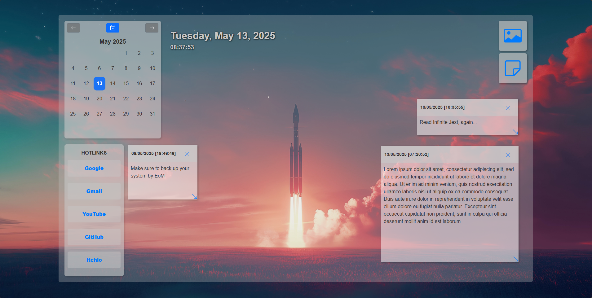
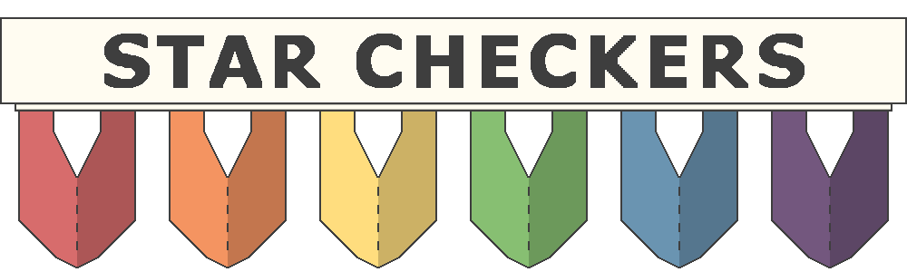
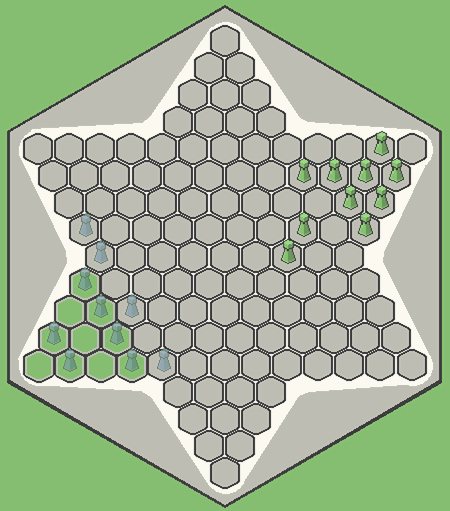
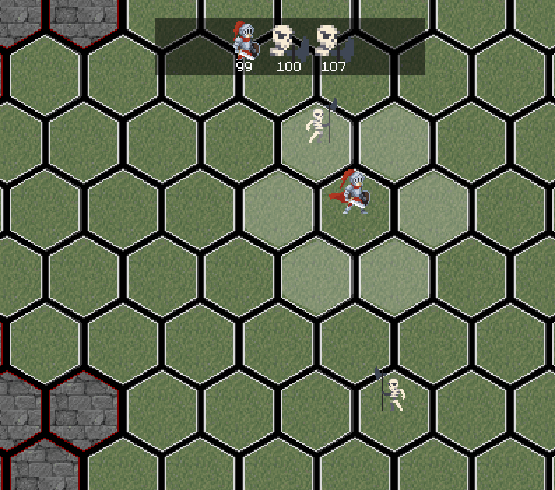
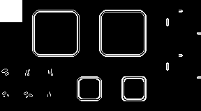
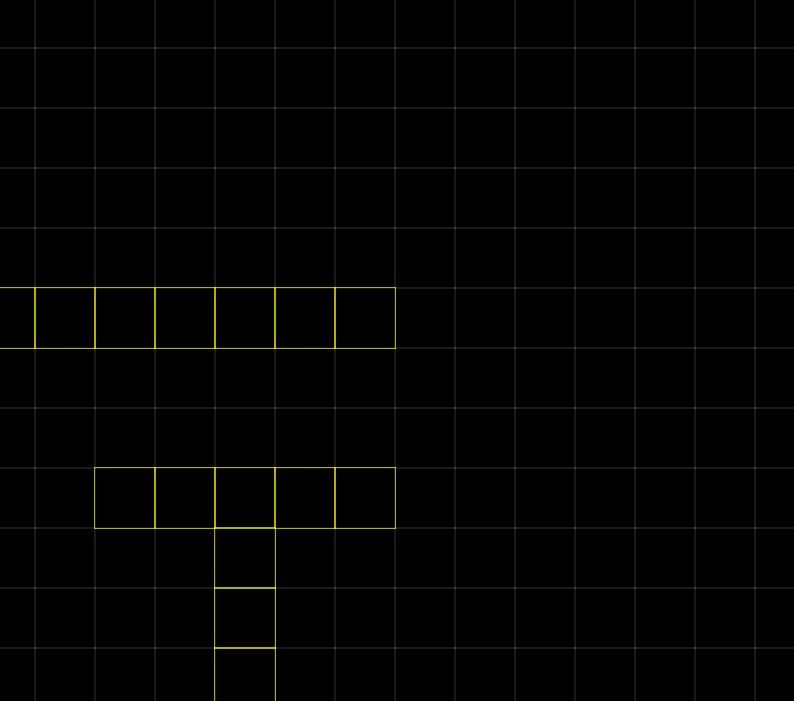

Hello, I'm
Dorian Payton
Software Developer

Hello, I'm
Software Developer
Get To Know More
I am a self taught programmer with a background in mechanical and manufacturing engineering. Suffice it to say I love to build and maintain systems! I started my exploration into programming by learning VisualBasic and Python to automate professional tasks but that quickly branched into studying game design as a hobby with GameMaker becoming my IDE of choice. I ended up returning to university to learn computer science more formaly. I have become familiar with many more lanugages and development enviroments since then and I am particularly interested in web design, data analytics and machine learning. I know a handful of different programming languages ranging from Java/Kotlin for app development to HMTL & JavaScript for web devlopment. For examples of my work, feel free to check out some of the demos and links showcased below!
Browse My Recent
Custom Start Page |
|
Here's a custom start page, complete with calendar and quick links. It is a simple design with the ability to change the background image as well as create sticky notes with timestamps. The notes persist between sessions so you can have some easy reminders for day-to-day tasks. See the github link for more details on the implementation.
Galactic Racer [ In development... ] |
|
HTML5 Support |
This is a Galaga inspired arcade shoot'em up with a few added featues to keep things lively. You can choose your path to victory through Fight or Flight: you can outpace your persuers through engine upgrades or fight them head on with pure firepower, each weapon has their use case as well as unique upgrade paths!
Star Checkers |
|
Windows & Android support |
This is a simple implementation of Chinese Checkers. It is my first attempt at self-publishing a feature-complete project. It is a comfy board game where you can play against bots or friends in local-multiplayer. The game is currently held in the closed-release phase on Google Play, pending playtest feedback. In the meantime, check it out on my Itch.io page!
 Here are a few more examples of systems I've built and/or implemented into other projects. The rougelike genre is one of my favorites to play, and here is a demo showcasing turn-based combat in a hex grid environment. The system for making the hex tile dungeons is dynamic, meaning that the parameters (tileset, tile size, spawn points, spritework, etc...) are both generated and can be edited at runtime.
I have a lot of familiarity with randomized map generation, whether it uses noise maps or otherwise. This demo uses wave function collapse to populate a tile layer. The algorithm takes a tileset and the tile dimensions then it handles isolating each image and indexing neighbors under the hood. That way, this can scale to pretty much any tileset!
This is a small demo implementing steering behaviors and pathfinding within an envrionment generated at runtime. This is a portion of a larger research project to create a crowd flow simulation that can support 100s-1000s of enities, but I have run into limitations of the GameMaker engine (and my own knowledge) which have put this project on hiatus for now.
